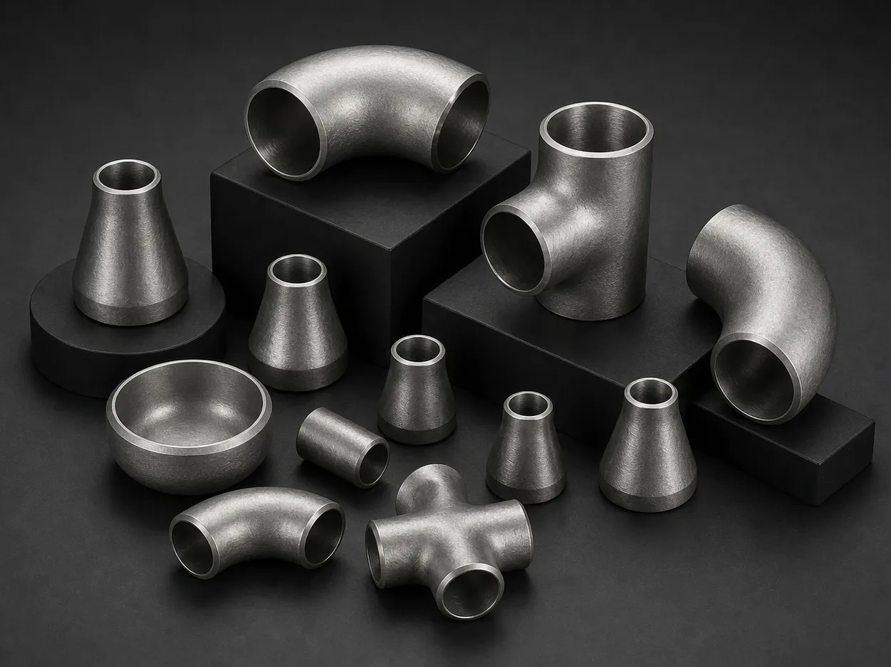

Gururaj Infradesigns is a trusted Alloy Steel WP22 Pipe Fittings Manufacturer in India offering ASTM A234 WP22 / ASME SA234 fittings in seamless, welded, and fabricated forms for power plants, refineries, petrochemical facilities, and high-temperature pressure piping applications.
Alloy Steel WP22 Pipe Fittings are chromium-molybdenum alloy fittings specifically developed for high-temperature and high-pressure service applications. Known for their excellent creep resistance, oxidation resistance, and long-term thermal stability, these fittings are widely used in power plants, refineries, petrochemical facilities, and heavy process industries. Gururaj Infradesigns is a trusted ASTM A234 WP22 Pipe Fittings Manufacturer in India, supplying high-quality fittings designed to perform reliably in demanding operating environments.
Our product range includes elbows, tees, reducers, pipe caps, stub ends, crosses, and custom bends available in seamless, welded, and fabricated construction. Manufactured in accordance with international standards, ASTM A234 WP22 Pipe Fittings provide dependable performance where conventional materials may not withstand prolonged exposure to heat and pressure.

ASTM A234 WP22 is a chromium-molybdenum alloy steel grade containing approximately 2.25% chromium and 1.00% molybdenum. This alloy composition provides excellent resistance to oxidation, sulfidation, creep deformation, and thermal fatigue. These characteristics make WP22 Pipe Fittings particularly suitable for elevated-temperature service in critical industrial applications.
As part of our comprehensive range of Alloy Steel Pipe Fittings, ASTM A234 WP22 fittings are commonly used in steam systems, refinery process piping, heat exchangers, and pressure piping systems where durability and long service life are essential.
| Parameter | Details |
|---|---|
| Product | Alloy Steel WP22 Pipe Fittings |
| Specifications | ASTM A234 / ASME SA234 |
| Dimension Standards | ASME/ANSI B16.9, ASME B16.28, MSS-SP-43 |
| ASME B16.9 | Factory-Made Wrought Buttwelding Fittings |
| ASME B16.28 | Short Radius Elbows & Return Bends |
| MSS SP-43 | Low Pressure Corrosion Resistant Applications |
| Product Types | Elbow, Tee, Reducer, Cap, Stub End, Cross |
| General Size Range | 1/8" NB to 48" NB |
| Standard Size Range | ½" NB to 24" NB |
| DN Range | DN6 – DN100 |
| Seamless Size | 1/2" – 10" |
| Welded Size | 1/2" – 48" |
| Type | Seamless / Welded / Fabricated |
| Thickness | Sch 5S, 10S, 40S, 80S, 160S, XXS |
| Bending Radius | R=1D, 2D, 3D, 5D, 6D, 8D, 10D or Custom |
| Grade | ASTM / ASME | UNS Number | WNR | DIN Equivalent |
|---|---|---|---|---|
| WP22 | ASTM A234 / ASME SA234 | UNS K21590 | 1.7380 | 10CrMo9-10 |
Equivalent grade references help engineers and buyers identify compatible materials across different international standards and project specifications, simplifying material selection for global projects.
ASTM A234 WP22 Pipe Fittings retain their strength and structural integrity even during prolonged exposure to elevated temperatures. This makes them highly suitable for steam systems, refinery units, and thermal processing applications.
The chromium-molybdenum composition provides excellent resistance to creep deformation caused by continuous stress and heat. This ensures dependable long-term performance in critical services.
WP22 fittings offer improved resistance to oxidation and scaling compared to lower alloy grades. Their ability to withstand harsh thermal environments helps extend service life.
These fittings are designed to handle high-pressure applications while maintaining mechanical stability. This makes them suitable for demanding industrial piping systems.
Their durability and resistance to thermal degradation contribute to fewer replacements, reduced downtime, and lower lifecycle costs.
| Element | Composition (%) |
|---|---|
| Carbon | 0.05 – 0.15 |
| Manganese | 0.30 – 0.60 |
| Phosphorus | 0.025 Max |
| Sulfur | 0.025 Max |
| Silicon | 0.50 Max |
| Chromium | 1.90 – 2.60 |
| Molybdenum | 0.87 – 1.13 |
WP22 is commonly referred to as a 2.25Cr–1Mo alloy steel, valued for its excellent combination of heat resistance and mechanical strength.
| Property | Value |
|---|---|
| Tensile Strength | 415 MPa Min |
| Yield Strength | 205 MPa Min |
| Elongation | 20% Min |
| Hardness | 121 – 163 HB |
Alloy Steel WP22 Pipe Fittings are extensively used in steam pipelines, superheater systems, reheaters, and boiler applications operating under high temperatures and pressure. Their excellent creep resistance ensures safe and reliable long-term service.
Refinery process units handling elevated-temperature hydrocarbons frequently utilize ASTM A234 WP22 Pipe Fittings. Their oxidation resistance and mechanical stability help maintain operational efficiency in demanding environments.
These fittings are suitable for process piping systems exposed to thermal cycling and aggressive operating conditions. Their durability contributes to improved plant reliability and reduced maintenance.
WP22 fittings are commonly used in condensers, heat exchangers, and thermal transfer equipment where consistent performance under prolonged heat exposure is essential.
Various manufacturing and process industries rely on WP22 fittings for critical piping applications requiring dependable high-temperature performance and extended service life.
Choosing the right alloy steel grade depends on operating temperature, pressure conditions, and service severity. ASTM A234 WP22 offers enhanced performance compared to lower alloy grades while remaining a cost-effective solution for many industrial applications.
| Property | ASTM A234 WP22 | ASTM A234 WP11 |
|---|---|---|
| Chromium Content | 1.90 – 2.60% | 1.00 – 1.50% |
| Molybdenum Content | 0.87 – 1.13% | 0.44 – 0.65% |
| High-Temperature Resistance | Very Good | Good |
| Oxidation Resistance | Very Good | Good |
| Pressure Capability | High | Moderate |
| Typical Applications | Refineries, High-Pressure Systems | Boilers, Steam Systems |
| Relative Cost | Moderate | Economical |
ASTM A234 WP22 Pipe Fittings are often selected for more demanding refinery and pressure applications requiring improved oxidation resistance and creep strength. In comparison, ASTM A234 WP11 Pipe Fittings provide a more economical solution for conventional boiler and utility steam systems where service conditions are less severe.
| Finish | Benefits |
|---|---|
| Black Finish | Standard industrial finish suitable for most applications |
| Shot Blasted | Improves surface cleanliness and appearance |
| Pickled | Removes scale and contaminants |
| Painted | Protects against corrosion during storage and transportation |
Proper finishing enhances product integrity and ensures installation readiness.
Gururaj Infradesigns supplies Alloy Steel WP22 Pipe Fittings in multiple sizes, schedules, and configurations to support power generation, refinery, petrochemical, and industrial projects. Our products are supplied to EPC contractors, fabricators, engineering consultants, and industrial buyers across India.
With a focus on quality, technical expertise, and timely delivery, we help customers source dependable alloy steel piping components tailored to their project requirements.
Quality remains an integral part of our manufacturing and supply process. Every fitting undergoes inspection for dimensional accuracy, material conformity, and workmanship before dispatch.
As an ISO Certified Company, we are committed to delivering reliable piping solutions that consistently meet industrial quality standards and customer expectations.
Selecting the appropriate alloy steel grade requires evaluating operating temperatures, pressure ratings, and process requirements. Choosing the correct fitting material can significantly improve equipment reliability, efficiency, and service life. Our team can assist in selecting the most suitable WP22 fitting type, size, and specification based on your project requirements. We work closely with engineers, EPC contractors, consultants, and industrial buyers to provide practical guidance and dependable piping solutions for critical industrial applications.